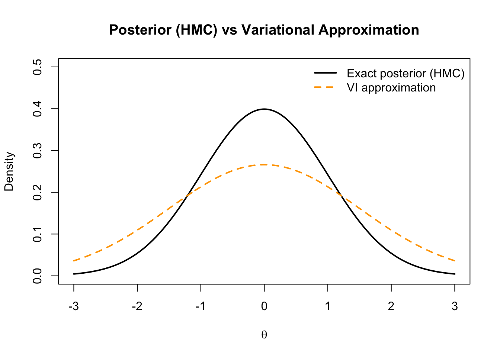

library(brms)
set.seed(8)
# Simulated logistic data
N <- 200
x <- rnorm(N)
y <- rbinom(N, 1, plogis(-1 + 2*x))
dat <- data.frame(x, y)
# Fit via Hamiltonian Monte Carlo (NUTS)
fit_hmc <- brm(y ~ x, data=dat, family=bernoulli(), chains=2, iter=2000, refresh=0)
summary(fit_hmc)
plot(fit_hmc)9 Week 8 — Advanced Bayesian Computation
This week explores two major developments that enable scalable Bayesian inference for complex or high-dimensional models:
Hamiltonian Monte Carlo (HMC) and Variational Inference (VI).
We study their principles, intuition, and practical use in software such as Stan and brms.
9.1 Learning Goals
By the end of this week, you should be able to:
- Explain the motivation for advanced sampling and approximation methods.
- Describe the mechanics and intuition of Hamiltonian Monte Carlo.
- Understand the trade-offs between exact (MCMC) and approximate (VI) inference.
- Run basic HMC and VI fits using modern R interfaces.
- Interpret diagnostics for both approaches.
9.2 Lecture 1 — Hamiltonian Monte Carlo (HMC)
9.2.1 1.1 Motivation
Traditional MCMC (e.g., Metropolis–Hastings, Gibbs) can mix slowly in high dimensions.
Hamiltonian Monte Carlo accelerates exploration by using gradient information from the log posterior to simulate physical motion through parameter space.
9.2.2 1.2 Hamiltonian Dynamics
We introduce an auxiliary “momentum” variable \(p\) and define the Hamiltonian: \[
H(\theta,p) = U(\theta) + K(p),
\] where
- \(U(\theta) = -\log p(\theta\mid y)\) (potential energy = negative log posterior),
- \(K(p) = \tfrac{1}{2} p^\top M^{-1}p\) (kinetic energy, with mass matrix \(M\)).
The system evolves via Hamilton’s equations: \[ \frac{d\theta}{dt} = \frac{\partial H}{\partial p}, \qquad \frac{dp}{dt} = -\frac{\partial H}{\partial \theta}. \]
9.2.3 1.3 Leapfrog Integration
To approximate continuous motion, HMC uses a leapfrog integrator with step size \(\epsilon\) and \(L\) steps:
- \(p\_{t+\epsilon/2} = p_t - \frac{\epsilon}{2}\nabla\_\theta U(\theta_t)\)
- \(\theta\_{t+\epsilon} = \theta_t + \epsilon M^{-1}p\_{t+\epsilon/2}\)
- \(p\_{t+\epsilon} = p\_{t+\epsilon/2} - \frac{\epsilon}{2}\nabla\_\theta U(\theta\_{t+\epsilon})\)
After simulating this path, we apply a Metropolis acceptance step using the change in \(H\).
9.2.4 1.4 Intuition
- The gradient \(\nabla\_\theta U(\theta)\) guides proposals along high-density regions, avoiding random walk behavior.
- Proper tuning of step size \(\epsilon\) and number of steps \(L\) yields efficient exploration.
- Modern implementations (e.g., Stan) adapt these automatically via the No-U-Turn Sampler (NUTS).
9.2.5 1.5 Example — Logistic Regression with HMC (Stan)
Stan’s NUTS algorithm performs automatic adaptation of step size and trajectory length.
9.2.6 1.6 Diagnosing HMC Performance
Key diagnostics: - Divergent transitions → numerical instability (reduce step size or re-scale parameters).
- Energy Bayesian Fraction of Missing Information (E-BFMI) → low values (<0.3) indicate poor exploration.
- \(\widehat{R}\) and effective sample size → check convergence and mixing.
library(bayesplot)
mcmc_nuts_divergence(fit_hmc)
mcmc_trace(fit_hmc, pars=c("b_Intercept","b_x"))9.2.7 1.7 Advantages of HMC
| Feature | Benefit |
|---|---|
| Gradient-based proposals | Rapid movement through high-density regions |
| Higher acceptance rates | Fewer rejections than random-walk MH |
| Fewer tuning parameters | Automatic adaptation (NUTS) |
| Robust for high-dimensional models | Used in most modern Bayesian software |
9.3 Lecture 2 — Variational Inference (VI)
9.3.1 2.1 Motivation
When exact sampling is too costly (e.g., massive datasets, deep models),
Variational Inference (VI) approximates the posterior by a simpler distribution \(q\_\lambda(\theta)\) within a parameterized family.
9.3.2 2.2 Objective Function
We minimize the Kullback–Leibler (KL) divergence: \[ \text{KL}(q_\lambda(\theta) \,\|\, p(\theta\mid y)) = \int q_\lambda(\theta)\log\frac{q_\lambda(\theta)}{p(\theta\mid y)}\,d\theta. \]
Equivalently, we maximize the Evidence Lower Bound (ELBO): \[ \text{ELBO}(\lambda) = E_{q_\lambda}[\log p(y,\theta)] - E_{q_\lambda}[\log q_\lambda(\theta)]. \] The higher the ELBO, the closer \(q\_\lambda(\theta)\) is to the true posterior.
9.3.3 2.3 Mean-Field Approximation
A common simplification assumes factorization: \[ q_\lambda(\theta) = \prod_j q_{\lambda_j}(\theta_j), \] which allows coordinate-wise optimization of each factor.
9.3.4 2.4 Example — Variational Bayes for a Normal Mean
Assume \(y_i\sim N(\theta,1)\) with prior \(\theta\sim N(0,1)\).
Analytically, the posterior is \(N\left(\frac{n\bar{y}}{n+1}, \frac{1}{n+1}\right)\).
We approximate it variationally by another normal \(q(\theta)=N(m,s^2)\),
and find \(m,s^2\) maximizing ELBO.
set.seed(9)
y <- rnorm(50, mean=1)
n <- length(y)
log_joint <- function(theta) sum(dnorm(y, theta, 1, log=TRUE)) + dnorm(theta, 0, 1, log=TRUE)
# Closed-form optimal q is Normal(m,s^2) with same moments as true posterior:
m_vi <- n*mean(y)/(n+1)
s2_vi <- 1/(n+1)
c(mean=m_vi, sd=sqrt(s2_vi)) mean sd
0.8884051 0.1400280 9.3.5 2.5 Automatic VI with brms
library(brms)
set.seed(10)
N <- 1000
x <- rnorm(N)
y <- 2 + 1.5*x + rnorm(N)
dat <- data.frame(x,y)
fit_vi <- brm(y ~ x, data=dat, family=gaussian(),
algorithm="meanfield", iter=5000, refresh=0)
summary(fit_vi)VI provides a fast deterministic approximation, trading off accuracy for scalability.
9.3.6 2.6 Comparison: HMC vs VI
| Feature | HMC (NUTS) | Variational Inference |
|---|---|---|
| Type | Sampling (asymptotically exact) | Optimization (approximate) |
| Accuracy | Very high | Depends on variational family |
| Speed | Slower | Very fast |
| Diagnostics | Convergence via \(\widehat{R}\), ESS | ELBO convergence |
| Use case | Complex or small data | Massive or real-time problems |
9.3.7 2.7 Visual Comparison (Conceptual)
theta <- seq(-3,3,length=400)
posterior <- dnorm(theta, 0, 1) # true posterior
vi_approx <- dnorm(theta, 0, 1.5) # wider variational approx
plot(theta, posterior, type="l", lwd=2, col="black", ylim=c(0,0.5),
main="Posterior (HMC) vs Variational Approximation",
ylab="Density", xlab=expression(theta))
lines(theta, vi_approx, col="orange", lwd=2, lty=2)
legend("topright", legend=c("Exact posterior (HMC)","VI approximation"),
col=c("black","orange"), lwd=2, lty=c(1,2), bty="n")
9.3.8 2.8 Practical Advice
- Use HMC (NUTS) as the default for accuracy and diagnostics.
- Use VI for large-scale models, initialization, or quick exploration.
- Compare results: if VI and HMC differ substantially, favor HMC.
9.4 Homework 8
- Conceptual
- Explain the difference between sampling-based and optimization-based inference.
- What role does the ELBO play in VI?
- Explain the difference between sampling-based and optimization-based inference.
- Computational
- Fit a simple linear regression using both HMC and VI in
brms.
- Compare posterior means, standard deviations, and computation time.
- Fit a simple linear regression using both HMC and VI in
- Reflection
- In what types of real-world problems might VI be preferred over HMC?
- How would you check whether your VI approximation is adequate?
- In what types of real-world problems might VI be preferred over HMC?
9.5 Key Takeaways
| Concept | Summary |
|---|---|
| Hamiltonian Monte Carlo | Uses gradients to propose efficient moves through parameter space. |
| No-U-Turn Sampler (NUTS) | Adapts step size and trajectory automatically. |
| Variational Inference | Optimizes a tractable approximation to the posterior. |
| ELBO | Objective function for VI; measures closeness to the true posterior. |
| Trade-off | HMC = accuracy, VI = speed; choice depends on model and data size. |
Next Week: Bayesian Model Averaging and Ensemble Learning — combining multiple Bayesian models for improved predictive performance.